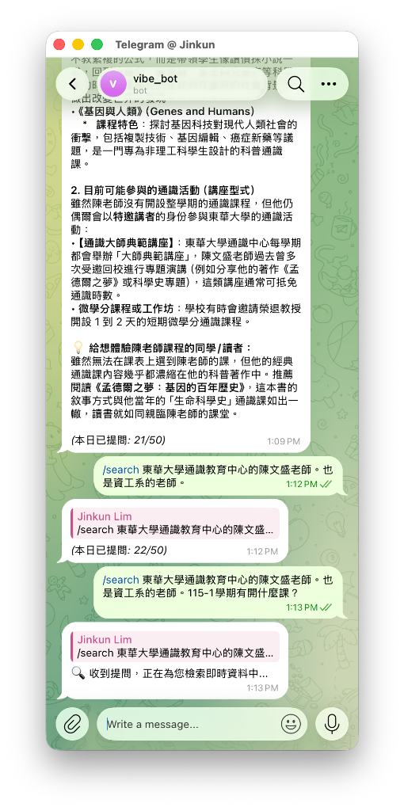

第一版真實環境運行截圖實證
杭州亞運金牌檢索

19金即時時事精準回答
通識陳老師消歧義

上下文疊加精確定位講師
Python 課程與進度

深度回答花中兼任與課綱
透明錯誤回報機制
透明通報精準定位問題
解決伺服器維護費、額度盜刷、回應黑箱痛點，並採取最利於即時互動的架構
editMessageText 原生動態文字替換，回饋零延遲。
ALLOWED_USER_IDS 白名單嚴格攔截。QuotaManager 跨日自動歸零配額計數器，雙層保護用量。
在 Google Cloud 全球骨幹網路上完成身分認證、即時檢索、狀態回饋與 LLM 推理
update_id，阻絕 Telegram 逾時重發風暴。⏳ 收到您的問題... 並取得 message_id。WebSearch.gs 抓取 Google News RSS，並更新狀態為 🔍 正在檢索...。editTelegramMessage 將佔位訊息平滑更新為完整答案與來源。editTelegramMessage 原生支援。徹底告別黑箱等待；使用者發訊後立即可知 Bot 當前運作進度
⏳ 收到您的問題，正在為您處理中...🔍 正在檢索即時新聞與公開資料...🧠 正在深度分析並為您整理完整回答...Main.gs 頂層 try...catch 中加入真實錯誤字串傳遞。ReferenceError: env is not defined）。維持 100% 免費架構，達成即時時事獲取、多輪指代代名詞消歧義與精準資料源過濾
UrlFetchApp 針對 Google News RSS 抓取即時新聞 XML。expandQueryWithContext()，自動從對話快取提取主體名詞，重構檢索詞為「東華大學 陳文盛 Dcard 評價」。
filterRelevantArticles() 嚴格驗證實體關鍵字，未命中者全數剔除；若無相關結果則隱藏來源區塊。
以「杭州亞運金牌檢索」與「東華大學陳文盛老師」為例，揭示 LLM 多輪知識收斂機制
WebSearch.gs 檢索亞運相關報導。完整展示狀態動態回饋、即時時事檢索、多輪消歧義收斂與錯誤透明通報

誠實反映現階段架構限制，確立後續功能演進方向